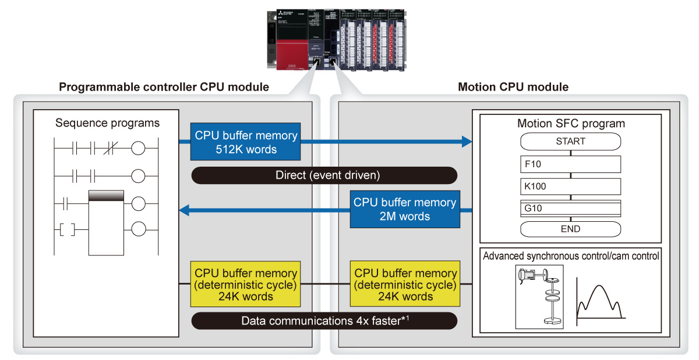
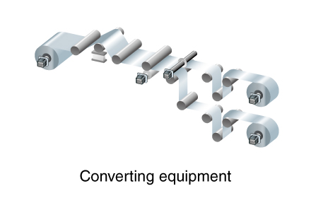
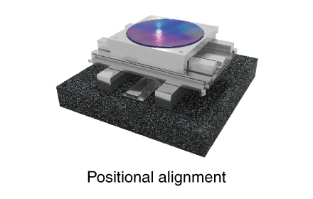
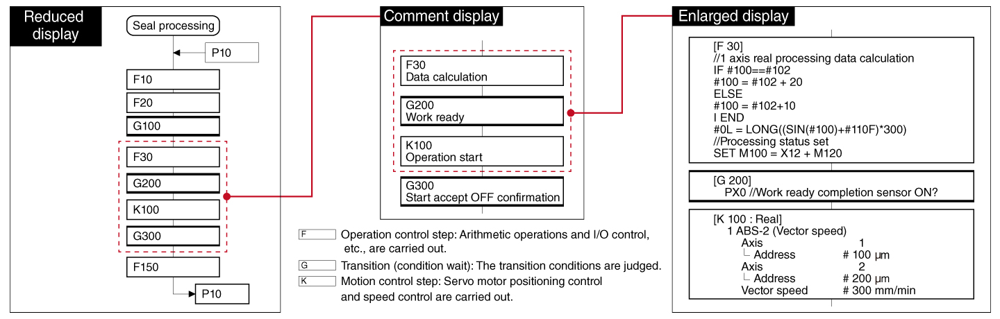

Controllers MELSEC iQ-R Series Product features -CPU-

Motion CPU module
The motion CPU module is incorporated into the multiple CPU configuration, separating the CPU load efficiently.
High-speed general control and high-accuracy motion control are achieved, thereby contributing to high-speed and high-accuracy machine processing.
Interface
Features<sup>High-speed and large-capacity communications between the CPU modules</sup>
- Large-capacity data communication
- In the multiple CPU configuration with the programmable controller CPU module and motion CPU module, a large memory area shared for high-speed data communication is provided
- High-speed communications are very useful when there is a need to instantaneously transfer a large amount of information such as cam data, thereby simplifying programming even further
- Useful for production lines responding to high variety and variable quantity production where recipe data needs to be instantly reflected to the motor operation according to commands from the computer

- *1.As compared to current Mitsubishi Electric products.
Various applications easily realized
- Synchronous control
- Vision system
- G-code
- Simple configuration of a converting equipment that requires high-precision synchronization between motors and stable machining with constant tension

- In cooperation with the vision system, it is possible to configure an alignment device that moves accurately, quickly and continuously according to the device position

- Execution of G-code programs used in a processing machine enables simple machine tool and punching

Motion SFC program with easy-to-understand processing steps
- Flowchart
- Event responsiveness
- The motion CPU module is programmed using the SFC*2 type language which enables programming in clearly identifiable steps
- The motion SFC program is extremely useful for equipment and production lines requiring fast response
- *2.SFC: Sequential Function Chart
Motion SFC Program

Specifications
Motion CPU module specifications
MT SFC : Motion SFCINS : Dedicated instruction
| Item | R16MTCPU | R32MTCPU | R64MTCPU |
|---|---|---|---|
| Max. number of control axes | 16 | 32 (16 axes × 2 lines) | 64 (32 axes × 2 lines) |
| Operation cycle setting (ms) | 0.222, 0.444, 0.888, 1.777, 3.555, 7.111 |
0.222, 0.444, 0.888, 1.777, 3.555, 7.111 |
0.222, 0.444, 0.888, 1.777, 3.555, 7.111 |
| Programming language | MT SFCINS |
MT SFCINS |
MT SFCINS |
| Servo program capacity (step) | 64K | 64K | 64K |
| Number of positioning points | 6400 (positioning data can be designated indirectly) | 6400 (positioning data can be designated indirectly) | 6400 (positioning data can be designated indirectly) |
| Servo amplifier network | SSCNETⅢ/H (1 line) | SSCNETⅢ/H (2 lines) | SSCNETⅢ/H (2 lines) |
| Max. distance between stations (m) | 100 | 100 | 100 |
| Interpolation | |||
| Linear interpolation (axis) | Max. 4 | Max. 4 | Max. 4 |
| Circular interpolation (axis) | 2 | 2 | 2 |
| Helical interpolation (axis) | 3 | 3 | 3 |
| Control mode | |||
| Positioning control | ● | ● | ● |
| Continuous path control | ● | ● | ● |
| Position follow-up control | ● | ● | ● |
| Advanced synchronous control | ● | ● | ● |
| Speed-torque control | ● | ● | ● |
| G-code control*3 | ● | ● | ● |
| Acceleration/deceleration control | |||
| Trapezoidal acceleration/deceleration | ● | ● | ● |
| S-curve acceleration/deceleration | ● | ● | ● |
| Advanced S-curve acceleration/deceleration | ● | ● | ● |
| Interface | |||
| PERIPHERAL I/F | ● | ● | ● |
| SD memory card | ● | ● | ● |
| Function | |||
| Absolute position system*4 | ● | ● | ● |
| Mark detection function | ● | ● | ● |
| Digital oscilloscope function | ● | ● | ● |
| Driver communication function | ● | ● | ● |
- *3.G-code control is available by additionally installing the G-code control add-on library. For more information, please contact your local Mitsubishi Electric sales office or representative.
- *4.Supported when a battery is connected to the servo amplifier. A battery is not required when using a servo motor equipped with a battery-less absolute position encoder.